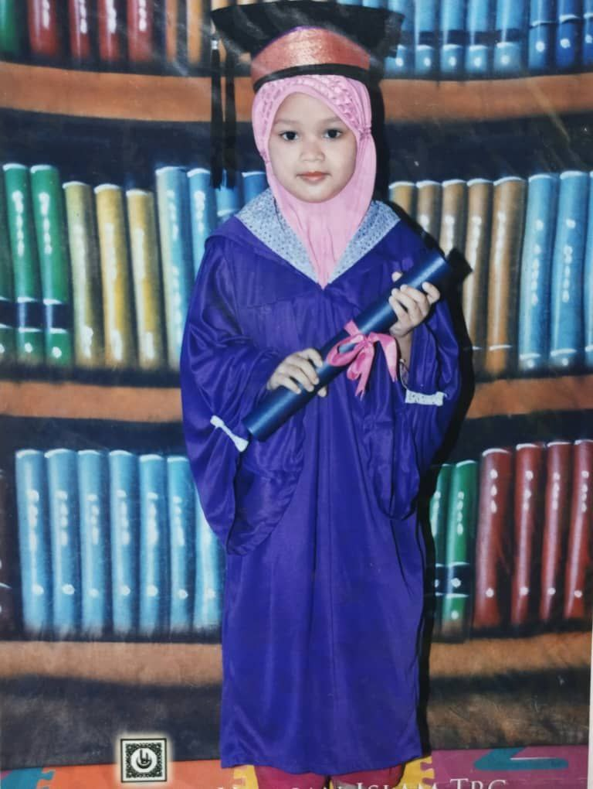

My Kindergarten Story!

The first time I enter kindergarten when I was 6 years old. The name of my kindergarten is Tadika Yayasan Hulu Terengganu. From what I can recalled, I'm not a big fan of school since I was a kid but it wasn't that bad. It just I don't really know how to communicate with others around my age which making me an outcast among them.
I might be a little bit traumatized when i was first enrolled there. I used to stay at home where it was quite and filled with matured people so when i saw how wild a children can be. It scares me. It was so hillarious how I despise kid at my age that much but the stories of my kindergarten didn't last that long. I only been there for one year and need to enter school like other 7 years old kid.